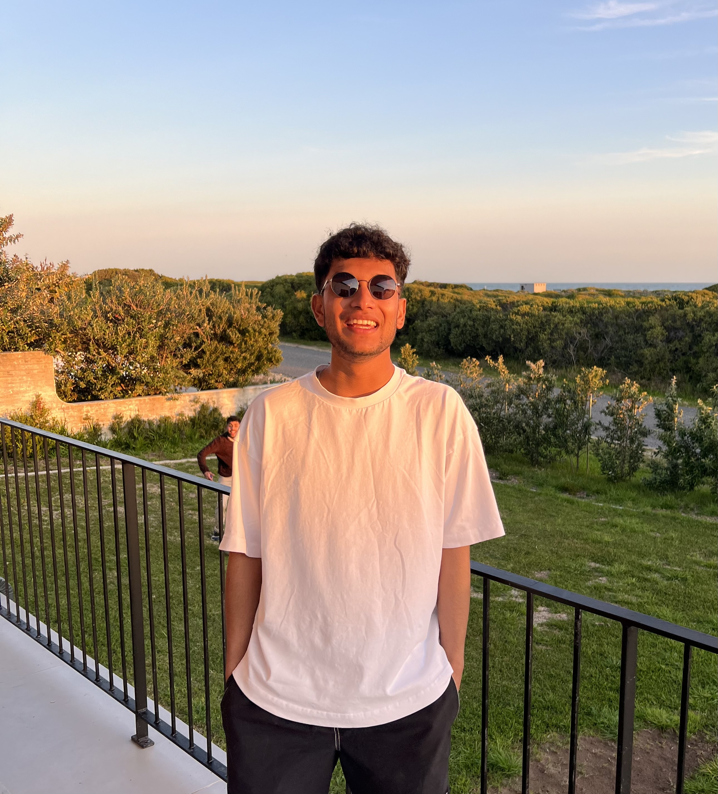
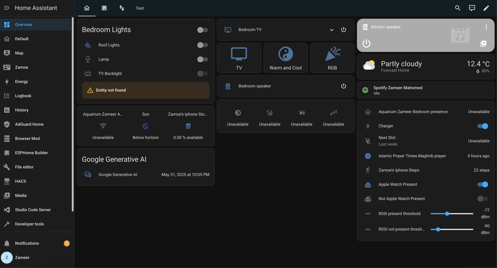
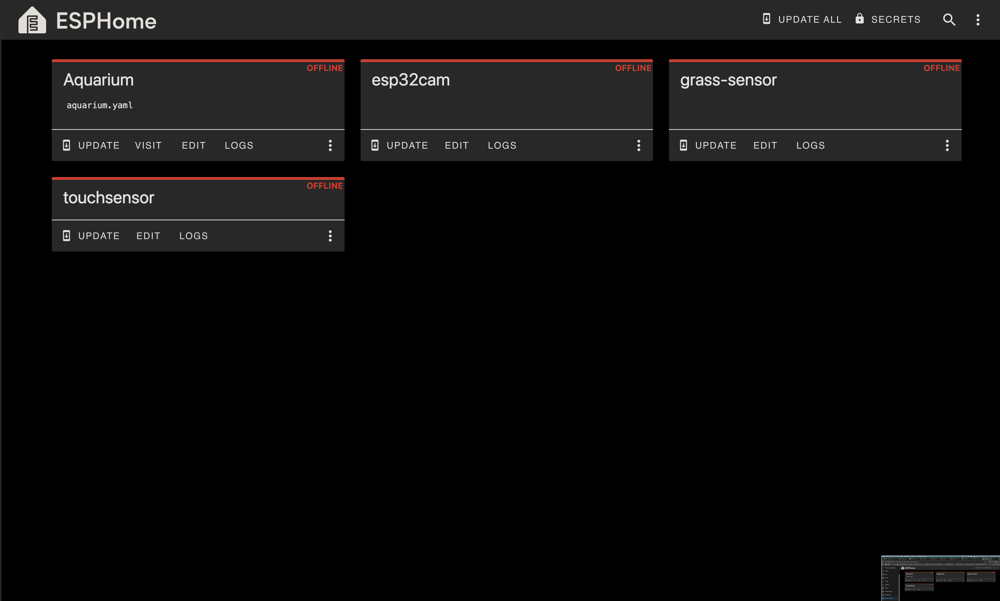
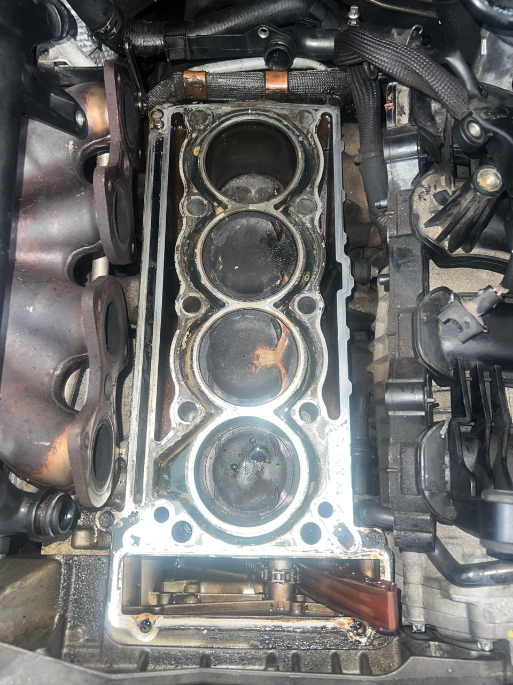

Zameer Mahomed
Hi, I'm Zameer! Take a look around at my journey as a Mechatronic Engineer.
About Me
I am a born tinkerer, driven by curiosity. I love the process of being able to create something from scratch and being able to learn more and more skills each time I do it. The intersection of hardware and software is where I like to be, being able to tangibly see and interact with something that I am working on. Born and growing up partly in Gauteng, but now a resident Cape Townnian, I have learnt to love the fast life, but appreciate the slow life. I like to know a little about everything (I suffer from the jack of all trades is a master of none cliche), so over time am trying to become a master of all even though it doesn't rhyme. Anyways that's enough from me, please take a look around here, everything that I can document is around and don't hesitate to reach out (there's a contact section below).
Qualifications
- NSC Matric with 6 distinctions.
- Final year student in a BSc in Mechatronic Engineering (Electrical), University of Cape Town
- Relevant Coursework: Control Systems, Embedded Systems, Power Electronics, Signal Processing
Projects


Experiences
Here are some of my most valuable experiences that have shaped my engineering journey so far.
 Engineering Internship at Triocon Engineering
Engineering Internship at Triocon Engineering

 Maverick International
Maverick International

Hobbies
(Un)fortunately, most of my hobbies fall into engineering. As I said earlier, I love tinkering, so in my own time I enjoy working with my hands, trying to bring ideas from my head into real life.
 DIY electronics and robotics
DIY electronics and robotics

 3D printing
3D printing

 Woodworking
Woodworking

 Photography and Videography
Photography and Videography
 Home Automation
Home Automation

 ESPHome
ESPHome

 Working on cars
Working on cars

 Padel and Soccer
Padel and Soccer